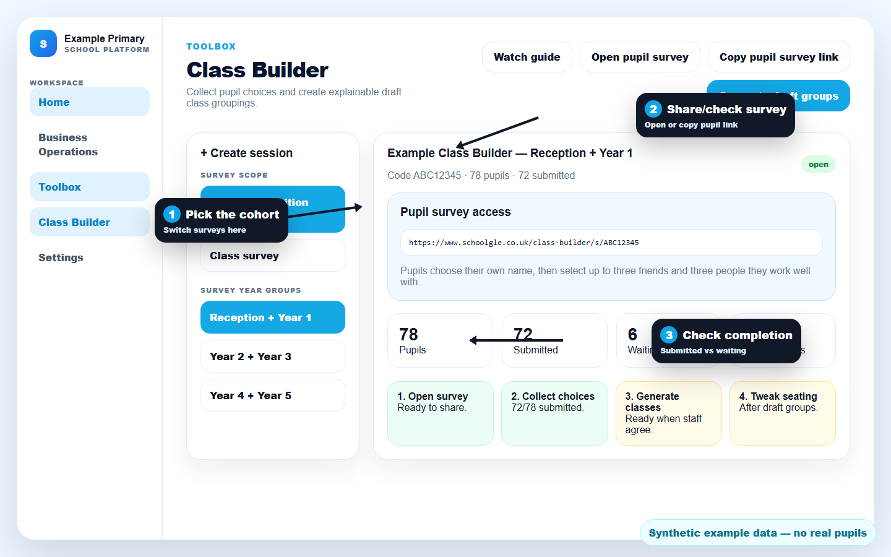
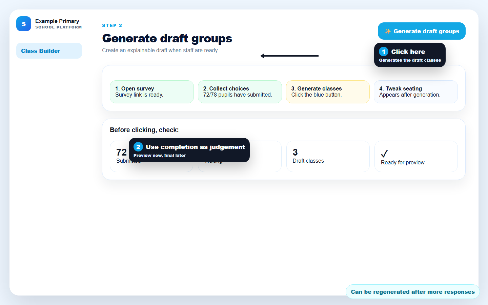
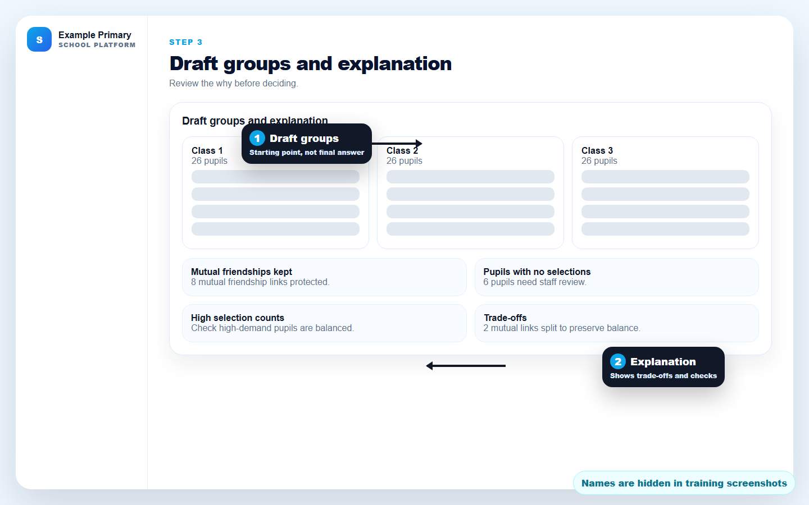
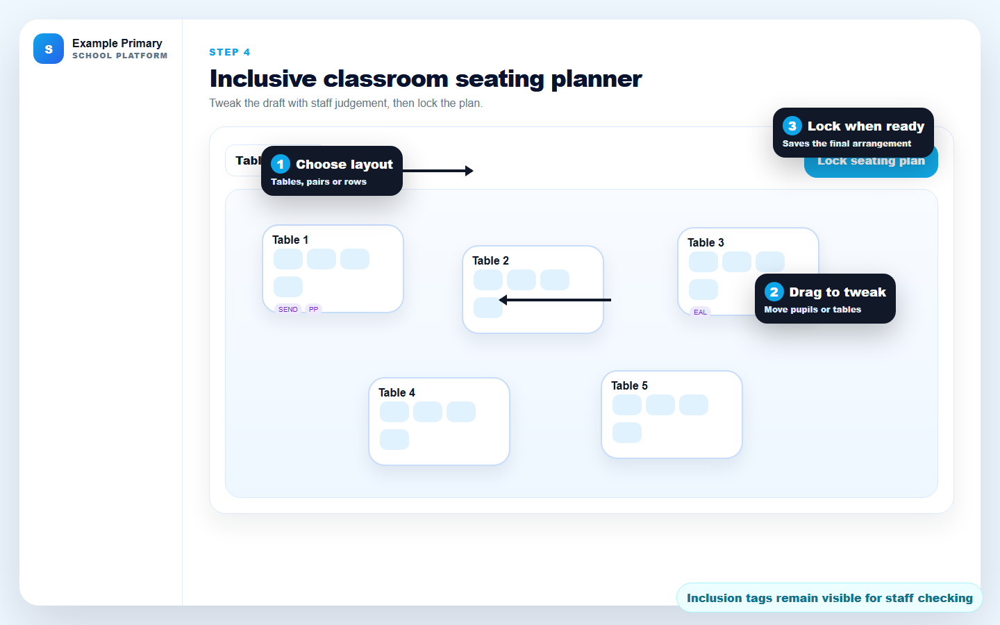
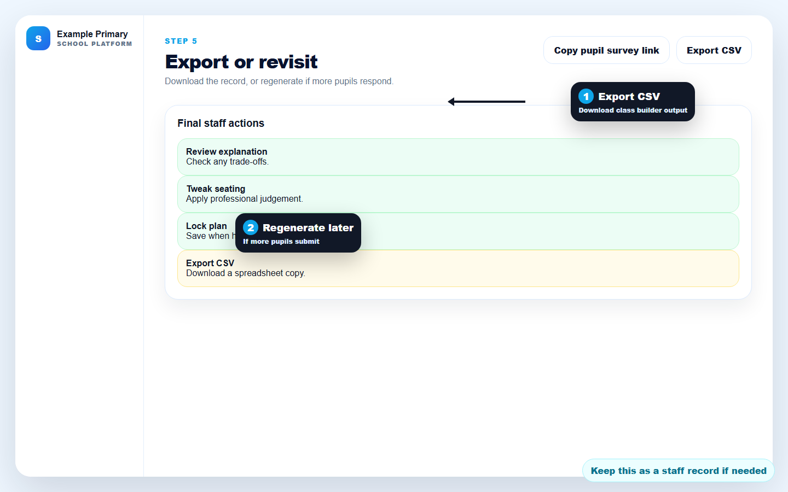

1. Collect choices
Pupils complete a child-friendly survey. Staff track who has submitted and who is waiting.
2. Generate drafts
Schoolgle creates draft groups using pupil choices, mutual links, balance and inclusion indicators.
3. Review and tweak
Staff review the explanation, adjust the seating planner, then lock or export when ready.
Step 1 — Choose the cohort and share the pupil survey
Pick the transition cohort on the left, then copy/open the pupil survey link. Pupils only see the survey; they do not see staff results.

Step 2 — Generate draft groups when ready
When enough pupils have submitted, click Generate draft groups. You can generate an early preview, then regenerate later when more responses arrive.

Step 3 — Read the explanation before deciding
After generation, review the draft groups and explanation. This helps staff understand what the system protected, what it could not protect, and where professional judgement is needed.

Step 4 — Tweak and lock the seating plan
The seating planner appears after draft groups exist. Staff can choose a room layout, drag pupils/tables, check inclusion tags, and lock the plan when happy.

Step 5 — Export or revisit later
Use Export CSV if the school needs a spreadsheet record. If more pupils complete the survey later, generate the draft groups again and review the updated output.

FAQs
Does Schoolgle make the final decision?
No. It creates an evidence-informed draft. Staff make the final professional decision.
Can we generate before everyone has submitted?
Yes, but treat it as a preview. Final decisions are better once most or all pupils have submitted.
Can draft groups be regenerated?
Yes. A new generation replaces the previous draft groups for that session.
What about pupils who did not submit?
They are included in class groups but have no choices to contribute, so they may appear in the explanation as pupils with no selections.
Can staff override the seating plan?
Yes. Drag pupils or tables, then lock the plan when staff are happy.
Can the results be exported?
Yes. Use Export CSV from the top-right controls.